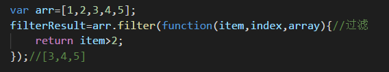
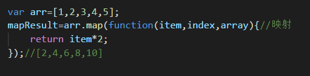
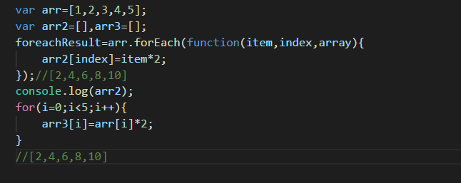
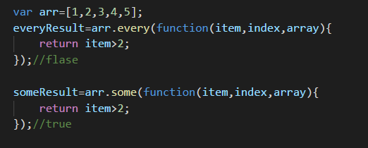
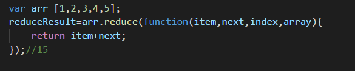

对一个数组 filter、some、map、foreach的操作分别有什么作用？
小课堂【武汉-WEB-C组】
分享人：孟晨
目录
1.背景介绍
2.知识剖析
3.常见问题
4.解决方案
5.编码实战
6.扩展思考
7.参考文献
8.更多讨论
1.背景介绍
使用JavaScript数组常常需要对数组进行遍历、迭代操作。而我们常用的就是for语句对数组进行迭代。
然而在ECMAscript5已经为数组定义了5个迭代的方法，分别是：filter、some、map、foreach、every，下面我们讲讲它们的具体作用。
2.知识剖析
五个迭代方法，每个方法都接收两个参数：要在每一项上运行的函数和运行该函数的作用域对象（可选的）。
传入这些方法中的函数会接收三个参数：数组的项的值、该项在数组中的位置和数组对象本身。
1. filter()是对数组中的每一项运行给定函数，返回该函数会返回true的项所组成的数组。


2. map()是对数组中的每一项运行给定函数，返回每次函数调用的结果组成的数组。


3. forEach() 是多数组中的每一项运行给定函数，这个方法没有返回值。它只是对数组中的每一项运行传入的函数，没有返回值。本质上与使用for循环迭代数组一样。


4. every()是对数组中的每一项运行给定函数，如果该函数对每一项都返回true，则返回true。
5. some()是对数组中的每一项运行给定函数，如果该函数对任一项返回true，则返回true。

3.常见问题
迭代和遍历、循环、递归有什么区别？
4.解决方案
循环能对应集合，列表，数组等，也能对执行代码进行操作。
迭代（iterate），指的是按照某种顺序逐个访问列表中的每一项。比如，for语句。
迭代只能对应集合，列表，数组等。不能对执行代码进行迭代。
遍历（traversal），指的是按照一定的规则访问树形结构中的每个节点，而且每个节点都只访问一次。
遍历同迭代一样，也不能对执行代码进行遍历。
递归（recursion），指的是一个函数不断调用自身的行为。比如，以编程方式输出著名的斐波纳契数列。
线性递归和尾递归。
5.编码实战
6.扩展思考
reduce()可以实现一个累加器的功能，将数组的每个值（从左到右）将其降低到一个值。
reduceRight()与reduce()功能一样，reduce是从数组的逐个遍历 到最后。而reduceRight()则从数组的最后一项开始，向前遍历到第一项。


7.参考文献
参考一： 迭代，循环，遍历，递归的区别？
参考二： 使用迭代方法替代for循环
参考三： 一张图看懂JavaScript中数组的迭代方法：forEach、map、filter、reduce、every、some
8.更多讨论
鸣谢
感谢大家观看
感谢北京-刘仁瑞师兄
by 孟晨